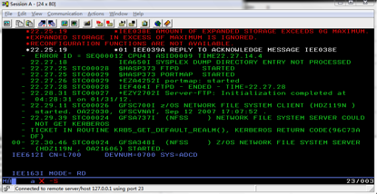
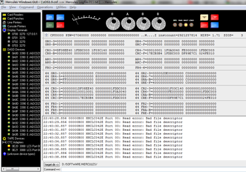
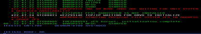
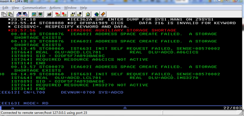
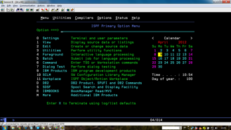

初学，在windows上搭建z/OS虚拟机，遇到不少问题，找到解决方法，记在这里。
PCOMM每次都提示打印，怎么去掉这个烦人的窗口？
解决办法：
PCOMM去掉每次连接提示打印的烦人窗口的方法：在D:\SOFTWARE\IBMPCOMM\private\*.ws文件里面添加：
[LT]
IgnoreWCCStartPrint=Y
UndefinedCode=Y
UndefinedDBCSChar=Y
如何为每一个磁盘建立shadow？
解决办法：
比如：sf+0A80: 为设备号为0A80的设备建立shadow (设备号只是个临时的概念)
IEE038E AMOUNT OF EXPANDED STORAGE EXCEEDS 0G MAXIMUM

解决办法：
在zOS1.9.cnf配置文件中删掉下面一行即可：
XPNDSIZE 6
HHCLC042E Port 00: Read error: Bad file descriptor
HerculesGUI界面一直提示 HHCLC042E Port 00: Read error: Bad file descriptor 并且MVS主控台端有几行大红字：

解决办法：
一直提示是老版本CTCI的bug，不用管。或者下载最新版的CTCI。
MVS主控台端出现大红字

解决办法：
等待，取决你机器速度。 + 绿色信息代表正常 + 红色的表示有错误或者警告 + 白色的信息如果有一个编号
错误IRA200E AUXILIARY STORAGE SHORTAGE

解决办法：
OS/390自动记录硬件 (和某些软件) 的错误数据和一些统计数据于PDS SYS1.LOGREC中，最终此数据集会被装满数据，系统会在 CONSOLE 上发一条信息。
使用下述作业会打印 LOGREC 中的简要信息，同时会清空 SYS1.LOGREC 数据集：
...
//STEP1 EXEC PGM=IFCEREP1,PARM='CARD'
//SERLOG DD DSN=SYS1.LOGREC,DISP=OLD
//ACCDEV DD DUMMY
//EREPPT DD SYSOUT=*
//TOURIST DD SYSOUT=*
//SYSIN DD *
SYSUM
ACC=Y
ZERO=Y
/*
参照原链接：http://blog.sina.com.cn/s/blog_6c45bc400100x1uf.html
如何规范地正常关闭大机虚拟机？
解决办法：
完整的停机，在停止VTAM之前, 要先停掉DB2，CICS等作业：
C CICSA
-DB8G STOP DB2
%CSQ1 STOP QMGR
F DLF,MODE=DRAIN
P DLF
先使用下面的命令停掉一般的任务：
S SHUTDOWN
使用D A,L确认仍然在运行的任务，不记得是不是VTAM是否会自动停掉，如果没有，使用下面的命令：
Z NET,QUICK
最后使用下面的命令停掉JES2：
$P JES2,TERM
之后在Hercules上输入STOP停止模拟机。
之后,可以使用下面的几个命令：
1、 输入EXIT退出Hercules, 可能要等一会儿。
2、 输入LOADPARM来改变IPL 参数，以便以不同的配置重新起动系统。
LOADPARM 0A82ACM1
3、 使用命令IPL A80来重新启动系统。
你的3270仿真软件(MVS Console)应该不需要重新连接。
输入命令L CICS欲登陆CICS出现错误:LCL701 UNABLE TO ESTABLISH SESSION - INIT SELF FAILED WITH SENSE 08570002
解决办法：
要正常登录，三个软件必须正常运行：JES2,VTAM和TSO,多半原因是因为VTAM还没正常启动好。只需等待一会儿问题解决。(LCL701为VTAM终端编号)
TSO默认USER/PASS
（0A82CSM1登陆TSO可以，CICS不行；0A82ACM1反之)
默认用户 密码 权限
- ADCDMST - SYS1 or ADCDMST - (RACF special authority)
- IBMUSER - SYS1 or IBMUSER - (RACF special authority)
- SYSADM - SYS1 or SYSADM - (DB2 and RACF special auth)
- SYSOPR - SYS1 or SYSOPR - (DB2 and RACF special auth)
- ADCDA ~ ADCDZ - TEST
- WEBADM - WEBADM
- OPEN1 - OPEN3 - SYS1

Master console 不显示
解决办法：
Master console 的窗口要在IPL 之前就打开 否则无法显示内容
Master console显示：*IRA200E AUXILIARY STORAGE SHORTAGE, 并且登陆‘L TSO’显示：IKT00203I ADDRESS SPACE CREATION FAILED
解决办法：
原因是Page Dataset空间不够，可试试增大hercules.cnf中的MAINSIZE
D ASM
查看page dataset使用情况 （Local Page Dataset 在70%以下才可以登录TSO.
为系统增加page。
PAGE DATASET在IPL的PARMLIB下SYS1.PARMLIB(IEASYS00)，Z/os1.9的是在ADCD.Z19.PARMLIB。
参照链接：RA200E AUXILIARY STORAGE SHORTAGE解决办法
Comments !